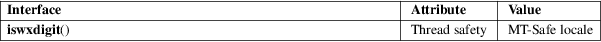

iswxdigit − test for hexadecimal digit wide character
Standard C library (libc, −lc)
#include <wctype.h>
int iswxdigit(wint_t wc);
The iswxdigit() function is the wide-character equivalent of the isxdigit(3) function. It tests whether wc is a wide character belonging to the wide-character class "xdigit".
The wide-character class "xdigit" is a subclass of the wide-character class "alnum", and therefore also a subclass of the wide-character class "graph" and of the wide-character class "print".
Being a subclass of the wide-character class "print", the wide-character class "xdigit" is disjoint from the wide-character class "cntrl".
Being a subclass of the wide-character class "graph", the wide-character class "xdigit" is disjoint from the wide-character class "space" and its subclass "blank".
Being a subclass of the wide-character class "alnum", the wide-character class "xdigit" is disjoint from the wide-character class "punct".
The wide-character class "xdigit" always contains at least the letters 'A' to 'F', 'a' to 'f' and the digits '0' to '9'.
The iswxdigit() function returns nonzero if wc is a wide character belonging to the wide-character class "xdigit". Otherwise, it returns zero.
For an explanation of the terms used in this section, see attributes(7).

C11, POSIX.1-2008.
POSIX.1-2001, C99.
The behavior of iswxdigit() depends on the LC_CTYPE category of the current locale.
iswctype(3), isxdigit(3)